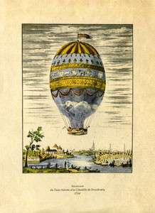
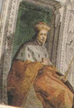
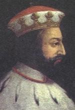
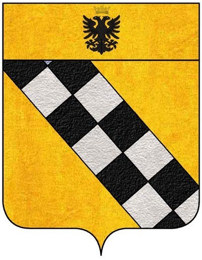
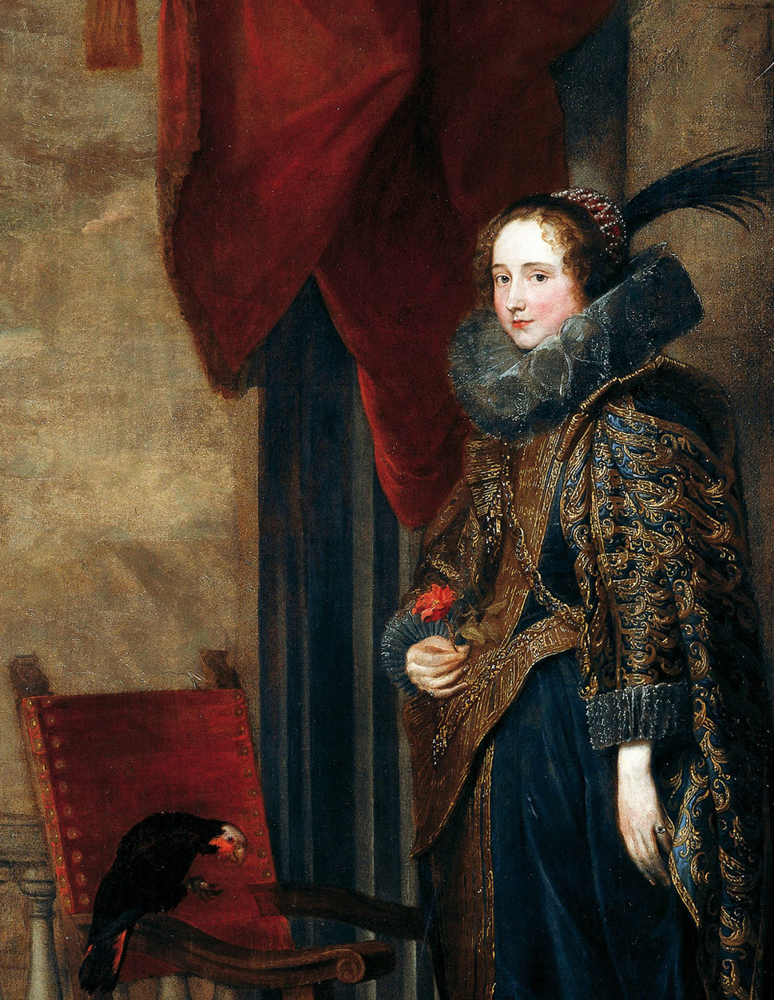
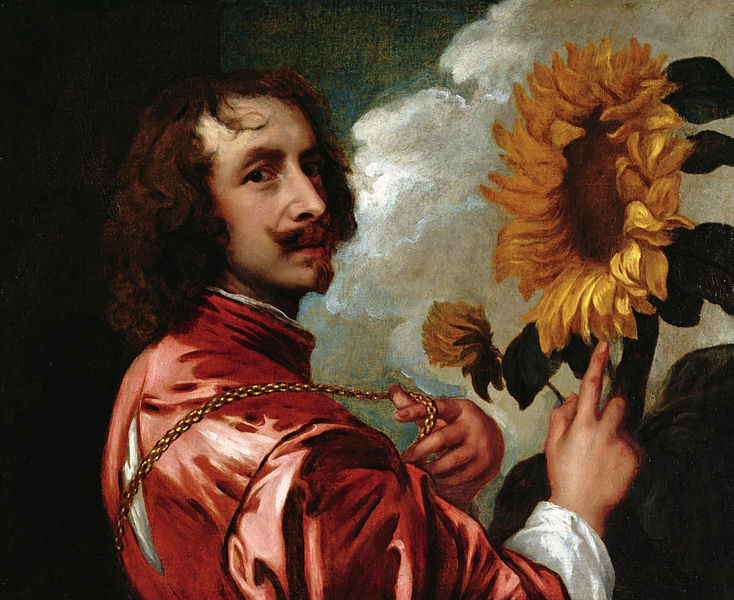

Alessia Maria Adorna è stato uno dei primi aeronauti (qualcuno dice addirittura il primo in assoluto) e la sua unica ascensione storicamente documentata è la decima della storia. Va considerato, quindi, un vero pioniere e merita per questo di essere annoverato tra i grandi personaggi dell'aerostatica italiana.
Il cielo e' aperto andiamo lassu'
La sua famiglia era discendente degli Adorna (o Adorno) di Genova che tra la fine del XIV e il secondo decennio del XVI secolo ebbero prestigio e potere dando diversi dogi alla repubblica marinara. Nel 1528, però, Andrea Doria, dopo aver deposto il doge Antoniotto II Adorno, li costrinse ad abbandonare la città e a trovare rifugio nelle Isole Borromee, sul lago Maggiore. Da lì si stabilirono nella Valle Vigezzo, in Piemonte, dove Francesco Saverio nasce il 14 gennaio 1744 a Villette, un villaggio nei pressi di Malesco. Nel 1758, com'è consuetudine per i valligiani, il giovane Minetto emigra con il padre recandosi prima in Svizzera e poi in Argentina. Prima del 1744 rientra in Europa e si stabilisce a Strasburgo dove si dedica a diverse attività commerciali accumulando una discreta fortuna.
Siamo in pieno Illuminismo e la ricerca scientifica ha in tutta Europa un notevole sviluppo e suscita grandi entusiasmi. Evidentemente anche Adorna risente di questo clima, si interessa agli esperimenti di aerostatica e alle possibilità del volo umano e decide di realizzare egli stesso un aerostato con il quale tentare un'ascensione. Purtroppo di tutto ciò non ci è arrivato alcun documento o testimonianza e l'unica impresa aerostatica realizzata da Adorna della quale si hanno notizie certe è l'ascensione compiuta il 15 maggio 1784 sopra la Cittadella di Strasburgo. L'aerostato, progettato e costruito dallo stesso Adorna con la collaborazione dei fratelli Enslin o Enslen, appare in una litografia a colori dell'epoca sontuosamente decorato e ricorda quello costruito dai fratelli Montgolfier per la prima ascensione umana di Pilatre de Rozier. Nella fascia centrale dell'involucro sono riprodotti i segni zodiacali alternati alla raffigurazione del sole, mentre sulla sommità un guidone reca l'iscrizione Coelum patet ibimus illuc (Il cielo ci chiama, andiamoci). Le cronache dell'epoca indicano che il pallone aveva un'altezza di 80 piedi, una circonferenza di 156, un volume di oltre 115mila piedi cubici e che pesava oltre due tonnellate e mezza. Considerando che le misure erano espresse in piedi francesi il pallone doveva avere un altezza di circa 25 metri e un volume di circa 4200 mc, simile cioè ad una mongolfiera moderna.
Nonostante la preparazione, che possiamo immaginare laboriosa, l'impresa non ha purtroppo l'esito sperato. Secondo quanto scrive Michel Faure nel suo Les frères Montgolfier et la conquete de l'air il pallone, con a bordo Adorna ed un secondo pilota rimasto ignoto (forse un suo congiunto), decolla e sale fino ad una cinquantina di metri dal suolo ma improvvisamente perde quota senza controllo fino ad andare ad urtare i tetti delle case provocando l'inclinazione dell'anello a bordo del quale si trovano i piloti e l'afflosciamento del pallone che a contatto con la fiamma del fornello prende fuoco finendo completamente distrutto. Adorna ed il suo compagno d'avventura vengono tratti in salvo assai malconci, ma incolumi. L'evento viene citato sia dalla Gazzetta Universale di Firenze, sia nelle memorie di Henriette de Waldner, meglio nota come baronessa di Oberkirch, che nelle sue Memoires nota come "questa catastrofe fece grande scalpore, soprattutto tra i borghesi e i commercianti. Si trema al pensiero che gli aeronauti potevano cadere sul selciato dinanzi alla cattedrale andando incontro ad un'orribile morte". Anche se di breve durata e finita rovinosamente si tratta comunque della decima ascensione assoluta della storia.
Dopo questa esperienza sembra che Adorna abbia compiuto altri tentativi in diverse città europee, ma non esistono notizie precise al riguardo. In particolare potrebbe essere stato l'autore della prima ascensione in Polonia, sebbene gli storici la attribuiscano al francese Jean Pierre Blanchard. In ogni caso, qualche merito in terra polacca deve averlo acquisito, visto che il re gli conferisce il titolo di cavaliere di San Stanislao. In seguito soggiorna in Francia, a Bordeaux e a Parigi, dove il suo cognome viene mutato in Adorne, ma non si hanno notizie di altre imprese aerostatiche. Adorna è citato dal Boffitto nella Rivista Aeronautica del 1933 e nella Storia dell'Aeronautica del Dolfuss oltre che da alcuni scrittori e cronisti locali.
Secondo alcune voci, fino ad oggi non suffragate però da prove, nel 1780 o 1781 Adorna avrebbe realizzato il primo volo umano della storia con un pallone autocostruito, in anticipo di due o tre anni sul volo di Pilâtre de Rozier e del marchese D'Arlandes con il pallone dei fratelli Montgolfier. Certo sarebbe bello poter attribuire il vanto del primo volo umano ad un italiano, ma documenti inoppugnabili che provino questa notizia non sono ancora stati trovati e quindi, per il momento, la prima e unica ascensione di Adorna storicamente documentata resta quella compiuta il 15 maggio 1784. I discendenti di Minetto abitano ancora oggi a Villette, nella casa di famiglia, ma non conservano alcuna memoria dell'illustre antenato.

Coelum patet ibimus illuc
Francesco Saverio Adorna, detto “Minetto”, precursore del volo in pallone.
L’ascendenza con gli Adorno di Genova accomuna i conti Adorni Braccesi, oggi residenti nella loro villa in Colognora di Compito a Capannori, con gli Adorna di Villette (Verbania) dalla cui famiglia ha preso i natali Francesco Saverio, precursore del volo aerostatico.
Nella dimora storica, a due passi dall’Aeroporto di Tassignano, dove ogni anno si svolge la “Festa dell’Aria”, Alessandro Ranieri Adorni Braccesi conserva l’originale di un’antica stampa a colori, datata 1784 e dedicata all’ “ascension du sieur Adorne”, rappresentante una delle prime ascensioni aerostatiche effettuata da Francesco Saverio Adorna nel cielo di Strasburgo. Il pallone aveva 26 metri di altezza e oltre 51 di circonferenza con un peso di 26 quintali e mezzo. Sulla bandiera spiccava il motto "Coelum patet ibimus illuc”: il cielo è aperto, andiamo lassù.
Da alcuni documenti attualmente allo studio, risulterebbe che già nel 1780 o 1781, quindi prima dei fratelli Mongolfier, Francesco Saverio avrebbe sperimentato una ascensione con un pallone autocostruito. Questi motivi hanno spinto l’Amministrazione comunale di Capannori ad intitolargli il Trofeo 2009 che assumerà il nome di “1° Trofeo Aerostatico Francesco Saverio Adorna”.
Da alcune indagini risulterebbe che Francesco Saverio sia stato realmente il primo ad alzarsi in volo con un aerostato. L’esperimento durò solo pochi minuti e si concluse con la totale distruzione del pallone. Fortunatamente non ci furono gravi danni per il pilota e il suo passeggero del quale si ignora tuttora il nome.
Oltre alle suddette esperienze l’Adorna effettuò altri voli in Europa e, forse, la prima ascensione in Polonia, anche se gli storici l’attribuiscono al francese Jean Pierre Blanchard. Per questa impresa il Re di Polonia lo fregiò del cavalierato di San Stanislao Augusto. In seguito “Minetto” soggiornò in Francia.
Francesco Saverio era nato a Villette il 14 gennaio 1744. I suoi antenati, infatti, dopo essere scampati all’eccidio degli Adorno a Genova, si erano stabiliti prima alle Isole Borromee e poi definitivamente a Villette. Seguendo la sorte di numerosi suoi convalligiani, emigrò giovinetto all'estero. Rimpatriato diciottenne rimase in famiglia fin verso il 1770, poi spinto dalla sua passione per la fisica, riespatriò concentrandosi sullo studio dell'aeronautica, argomento che già in quel tempo affascinava gli scienziati.

Adorna nella Storia
Nei primi tempi questa famiglia visse di mercatura, divenendo ricchissima, e quindi fu portata ad altissimo livello divenendone una famiglia patrizia genovese. Il primo ad avere il potere politico in Genova fu LANFRANCO Adorno, nel 1261 Anziano in detta città; nel 1336 BALDASSARRE Adorno fu Anziano di Genova; GUIDO Adorno, ammiraglio dei genovesi, nel 1284 riportò una grande vittoria sui pisani; MELIADUCE Adorno nel 1346 condusse, a spese sue, una galea armata con trecento uomini, alla conquista dell'Isola di Scio (Chios) e di altre terre dell'Asia Minore; AGOSTINO Adorno, capitano di galee genovesi, nel 1391 fu inviato in Romania dalla Repubblica genovese ; nel 1393 DOMENICO Adorno, fu Ufficiale delle provvigioni della Repubblica di Genova; nel 1399; GIORGIO Adorno, dottore dell'ufficio dei Sapienti, e Antonio Giustiniani, furono eletti priori di Genova.
Un ANTONIOTTO Adorno nel 1403 fu governatore della Corsica; TERAMO Adorno nel 1418 fu eletto doge di Genova, ma non regnò mai; nel 1445 un altro ANTONIOTTO fu generale dell'armata genovese; GIROLAMO, elettore degli anziani genovesi, nel 1523 fu Ambasciatore dell'imperatore Carlo V presso il Pontefice Adriano, il re d'Inghilterra, e la Repubblica Veneziana, poi fu nominato Duca dell'Impero.

Il doge Antoniotto I
Nel 1363 GABRIELE Adorno, azionista della Maona di Chios e principe di Chios (Re e Despota, alla greca) nel 1362, fu il primo del Casato a ricoprire la massima carica delle Repubblica, Doge di Genova; nel 1368 fu vicario imperiale. Altro Doge di casa Adorno fu ANTONIOTTO I, il quale ottenne nel 1390 il titolo di Barone del Regno di Sicilia e Gerusalemme, ed ebbe le signorie di Grimault, Saint Tropez, Serravalle Scrivia ; da una sua figlia, BRIGIDA, nascerà il ramo degli Adorni di Pisa, che nel 1771 darà origine ad un'altro ramo che porterà il nome Adorni Braccesi.
La famiglia ebbe in tutto ben sette dogi: GABRIELE, ANTONIOTTO I, GIORGIO, PROSPERO, BARNABA, RAFFAELE ed ANTONIOTTO II. La famiglia diede alla Chiesa Cattolica un alto prelato, LUCHINO, che fu Arcivescovo di Nicosia in Cipro e Vescovo di e in Cipro.

Il doge Giorgio Adorna
Corona: ducale e dal 1637 reale.
Motti: Iuncti et fortes.
Omnia praetereunt.
Adurnus Utroque Paratus.

Stemma araldico Adorna
La marchesa Paolina Adorno ritratta dal pittore fiammingo Sir Anthony Van Dick 1627
La tela può considerarsi il punto di approdo delle ricerche compositive di Anton Van Dyck sul tema del ritratto negli anni genovesi. Tutti gli elementi che contribuiscono alla celebrazione personale, familiare e di classe sono impaginati in una cornice architettonica ampia e articolata, che aggiunge magnificenza alla composizione. Le piume sul cuscino e la rosa prossima a sfiorire simboleggiano la caducità della bellezza.Il merletto nel periodo di Van Dick.
Traduzione tratta da:
Lace of the Vandyke Period, Jackson, Mrs. F. Nevill. The Connoisseur, Vol. 2 (1902)
Il secolo d’oro del merletto fatto a mano fu il XVI secolo, dove troviamo evidenti testimonianze nell’arte pittorica. Sulle preziose tele dell’epoca troviamo dei merletti dipinti con dovizia di particolari che ci mostrano tutta l’elaborazione e lo splendore di tali manufatti. Tra l’usura e gli strappi ne sono sopravvissuti molto pochi, ma alcuni sono conservati come reliquie nei più importanti musei del mondo. I ritratti di Van Dick hanno un grande valore storico documentativo, ci dimostrano le diverse tecniche adottate in quel tempo quando i merletti erano ad ago e a fuselli. Prima di questi merletti si conoscevano altri tipi di trasparenze realizzate come il punto tagliato e la rete. Quando i bordi degli abiti erano consumati, venivano grezzamente rammendati intrecciando i fili del tessuto: questo è stato considerato “ l’embrione del merletto”. Nei dipinti del Carpaccio si possono vedere dei galloni o passamanerie formati da un intreccio di fili d’oro. Questo prezioso intreccio è molto affine al merletto, che si nota molto bene nei due ritratti della Marchesa Paola-Adorna Brignole Sale. Uno di questi ritratti si trova a Genova nella Galleria di Palazzo Rosso e l’altro fa parte della collezione privata del Duca di Abercon. Tredici righe del costoso ornamento arricchiscono il fondo del vestito; il lungo collo e il camuffo nelle maniche sono ornati con il filo di lino lavorato secondo le caratteristiche dell’epoca.

Marchesa Paola Adorno
Questi fili sciolti intrecciati, assomiglianti all’attuale “torchon”, venivano eseguiti dalle contadine in tutta Europa. In Inghilterra, questo tipo di merletto veniva chiamato” Bone Lace” ( merletto dell’osso”, perché i fili venivano avvolti su piccole ossa di animali). La regina Anna acquistò anche del “Great bone lace” e “Little bone lace” a Winchester e a Basino. Nelle periferie di queste due città si trovavano moltissime merlettaie, molte di più di quelle che ci sono attualmente. In seguito il Carpaccio, Frans Pourbus, Holbein portarono sui dipinti la storia del merletto, mostrando nei dettagli il delicato guipure e i bordi di merletto nei collari del XVI secolo. Ma Van Antony Dyck mostrò nei suoi ritratti la magnificenza del merletto, dandogli il giusto valore come un accessorio prezioso negli abiti. C’è un sottile fascino nel merletto fatto a mano che non è facile da spiegare, tutti riconoscono la grazia e l’effetto della morbidezza delle gale e delle cascate di merletto. Quando una donna introduce del merletto nel suo abbigliamento, il suo look è reso più affascinante; anche l’abito più sontuoso non appare mai volgare.
Van Dyck non desiderava che i suoi principeschi e sfarzosi “modelli” posassero con troppi gioielli, doveva dare più importanza al merletto che al gioiello.
Se non fosse stato così, molti suoi ritratti avrebbero perso il loro fascino. Si può dedurre così che Van Dyck ha ritratto con tanta passione i suoi modelli e il merletto è stato una vera fonte di ispirazione e probabilmente senza il merletto, molti dei suoi quadri non sarebbero stati eseguiti. Al raffinato senso artistico di V. D. è dovuto lo splendore dei diamanti rubini e smeraldi: il merletto nella sua incomparabile bellezza a confronto non perse di valore( è vero comunque che il giusto valore venne dato da chi aveva buon gusto e ne riconosceva i dettagli).
Alla fine del XVI secolo l’Italia influì nella moda dei collari o gorgiere ornati di “ Reticella” o merletti geometrici e si sparse in tutta Europa : tale influenza fu dovuta a Venezia, Genova e Padova, finché Parigi non dettò nuove idee nella moda.
V.D. dipinse i suoi ritratti proprio in questo periodo di transizione della moda mostrando, nei vari modi di abbigliarsi, le due tipologie di collari “ coll rabbutus”, cioè i grandi colli cadenti degli uomini e quelli rigidi alla Medici e gli scollati corsetti delle donne guarniti di merletto. Questi esempi stravaganti nel vestirsi, sono rimasti a noi in tutto il loro fascino e bellezza tramite la mano sapiente di un grande artista. In molti ritratti di Van Dyck e di Rubens si vede che la moda delle gale ai polsi sopravvisse ai stretti polsini per molti anni, anche dopo la fine delle gorgiere che erano state abbandonate per un modo nuovo di abbigliarsi.
Durante il periodo di Maria De’ Medici, i collari rigidi che presero il suo nome, venivano portati chiusi all’inizio del collo o in modo più elegante bordando il decolté di un finissimo merletto, come la regina Henrietta Maria ed Helena Fourment.
 Marchesa Paola Adorno
Marchesa Paola Adorno
Il marchese Anton Giulio Brignole Sale (Genova, 23 giugno 1605 – Genova, 20 marzo 1662) è stato un religioso, scrittore e diplomatico italiano, al servizio della Repubblica di Genova.
Il Ritratto equestre di Anton Giulio Brignole-Sale è un dipinto a olio su tela di Antoon van Dyck.
Il dipinto raffigura il marchese genovese Anton Giulio Brignole Sale, figlio del futuro doge di Genova Gio. Francesco Brignole.
Nato nel 1605, il nobiluomo è rappresentato a cavallo. È, questo, il primo dei tanti ritratti equestri eseguiti da van Dyck, culminati con i grandi ritratti del re Carlo I d'Inghilterra a cavallo (Carlo I a cavallo). Il giovane artistocratico cavalca un cavallo bianco e si toglie il cappello con la mano destra. Ai suoi piedi un cane, alle sue spalle delle colonne ed un paesaggio campestre con sullo sfondo una marina.
Il ritratto fu eseguito assieme a quello della moglie del marchese, Ritratto di Paolina Adorno, marchesa di Brignole-Sale.
Antoon Van Dick
Antoon van Dyck (Anversa, 22 marzo 1599 – Londra, 9 dicembre 1641) è stato uno dei piu' grandi pittori fiamminghi, principalmente ritrattista, che divenne il primo pittore di corte in Inghilterra, dopo un lungo soggiorno in Italia. È universalmente noto per i ritratti della nobiltà genovese e di Carlo I re d'Inghilterra, dei membri della sua famiglia e della sua corte. Con il suo metodo di pittura di rilassata eleganza, influenzò i ritrattisti inglesi, come Peter Lely, per i successivi anni. Oltre ai ritratti, per i quali fu molto apprezzato, si occupò anche di soggetti biblici e mitologici, introducendo alcune notevoli innovazioni pittoriche.
Fu allievo e amico del pittore Pieter Paul Rubens, del quale assimilò la tecnica e, in parte, lo stile.
Dopo aver trascorso la giovinezza ad Anversa, si spostò in Italia, dove compì il rituale viaggio di formazione, caratteristico di tutti i grandi pittori fiamminghi. Qui ebbe l'opportunità di vedere e copiare alcune grandi opere rinascimentali, specialmente del suo pittore favorito, Tiziano. Di ritorno dall'Italia, passò in Inghilterra, alla corte di Carlo I Stuart, dove si occupò quasi esclusivamente di ritratti.

Sir Antoon Van Dick autoritratto


{kind=link}